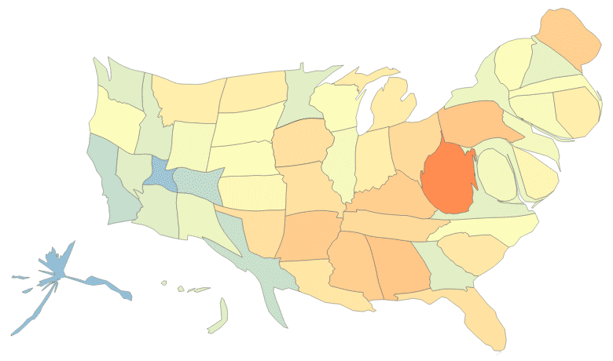

Cartograms with d3 & TopoJSON

About
cartogram.js is a JavaScript implementation of an algoritm to construct continuous area cartograms, by James A. Dougenik, Nicholas R. Chrisman and Duane R. Niemeyer, ©1985 by the Association of American Geographers. This example combines TopoJSON-encoded boundaries of the United States from Natural Earth with 2011 US Census population estimates to size each state proportionally.
There’s also a segmentized topology, which distorts the shapes more fluidly than the original.
Designed and built by Shawn Allen at Stamen. But d3.js does most of the heavy lifting; colors by colorbrewer.